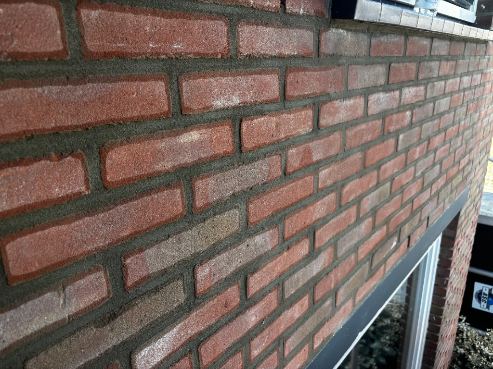
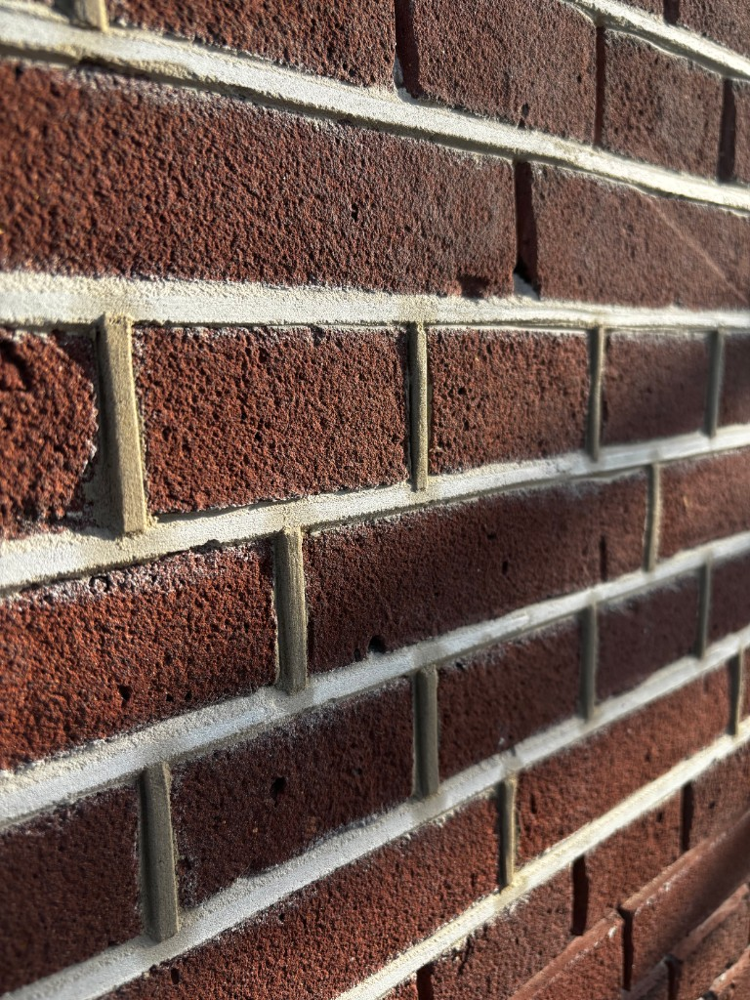
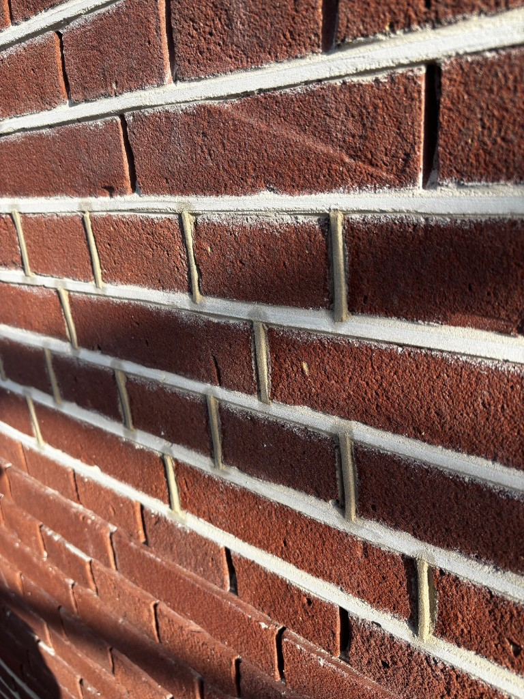
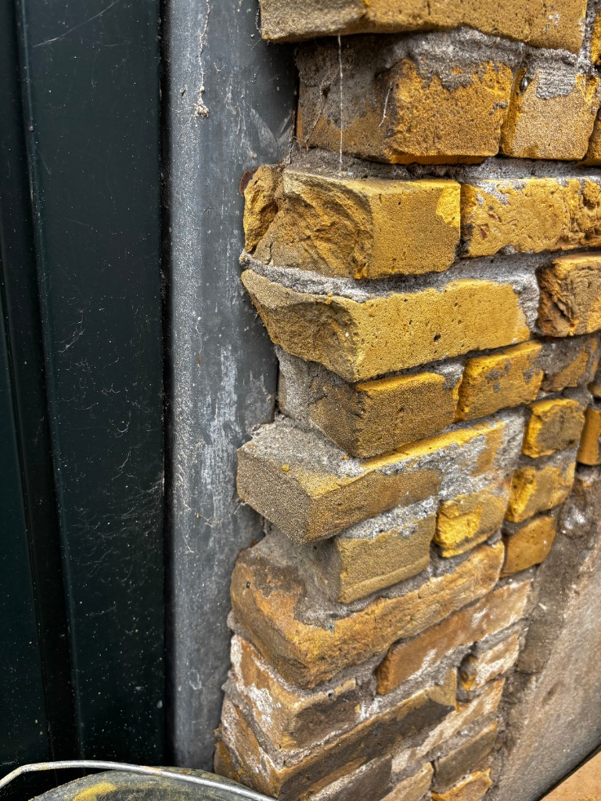
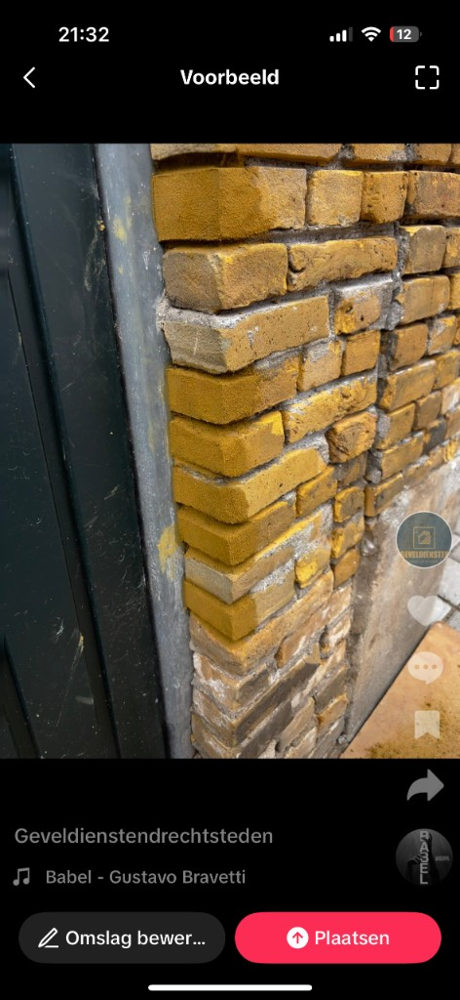
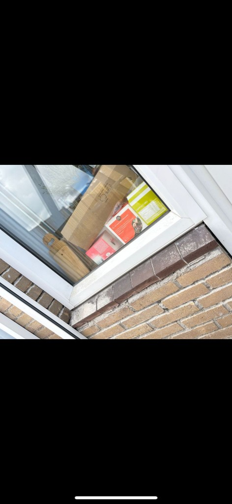
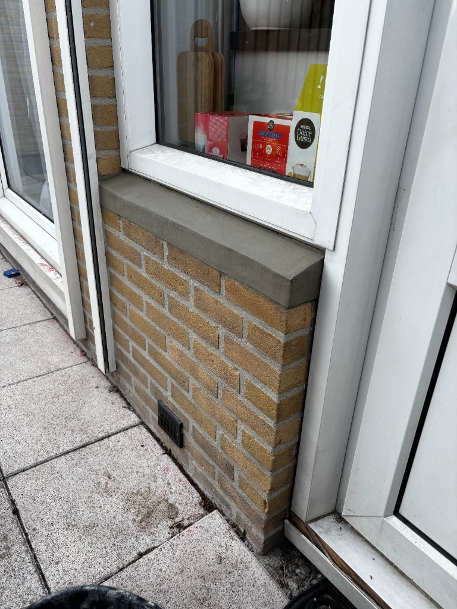

Recente projecten
Een selectie van eigen werk op baksteengevels — gegroepeerd waar meerdere foto’s bij hetzelfde object horen. Geen stock: dit komt uit uw projecten.
Knipvoeg renovatie gevel – project Kortrijk
Dit type voegwerk geeft de gevel een luxe en ambachtelijke uitstraling, waarbij diepte, schaduwwerking en contrast duidelijk naar voren komen. In combinatie met herstel van metselwerk waar nodig vormt het geheel weer één strak en duurzaam gevelbeeld.


Resultaat
De gevels zijn volledig gereviseerd met respect voor het originele metselverband en de authentieke uitstraling van de woningen. Door het nauwkeurig herstellen van het voegwerk en de sierdetails ogen beide topgevels weer strak, duurzaam en in lijn met de oorspronkelijke bouwstijl.


Uithakken, reinigen, voegen en impregneren – strakke renovatie van bestaande gevel
Van versleten voegwerk naar een strak en egaal eindresultaat.
Gevelrenovatie hoekhuis – complete aanpak van zij- en voorgevel, achtergevel
Professionele uitvoering met oog voor detail en veiligheid.
Gevelrenovatie met steiger
Platvol voegwerk op roodbaksteen – strak en egaal eindresultaat
Vers aangebracht voegwerk met een natuurlijke kleurverandering na droging.


Strakke snijvoeg – perfect lijnenspel en strakke afwerking
Snijvoeg met nauwkeurig uitgeslepen voegen voor een moderne en verzorgde uitstraling van de gevel.



Plaatselijk kleurherstel van gevelstenen 🎨
De stenen zijn zorgvuldig bijgekleurd en afgestemd op de bestaande gevel. Na droging sluit de tint volledig aan op de originele steen — onzichtbaar verschil. ✨


Gevel opnieuw gevoegd en dorpel hersteld met betonsmering
Onder dit venster bij gele baksteenbouw zijn het paneel langs het kozijn opnieuw ingevoegd en het dorpelvlak — onder de waterlijst — hersteld met betonsmering, zodat regenwater weer netjes naar buiten geleid wordt.


Videobeelden van ons werk
Opnames van de gevel tijdens uitvoering.
Strakke afwerking, netjes waterdicht en klaar voor jaren mee 💪
Ook problemen met je schoorsteen, voegwerk of lood?
📩 Stuur gerust een bericht – wij regelen het.
Geveldiensten Drechtsteden
Snijvoeg in rollaag — strak afgewerkt.
Zo blijft de waterafloop berekenbaar en trekt het vocht niet stiekem achter de gevelkoppen — werk dat prettig past bij het totaalbeeld van uw geveloppervlak 💪
Vergelijkbare zichtlijn of rollaag op uw adres?
📩 Stuur een bericht of vraag een offerte — wij bekijken het graag mee.
Geveldiensten Drechtsteden
Ook uw gevel in topvorm?
Vraag een vrijblijvende offerte of stuur foto’s mee.